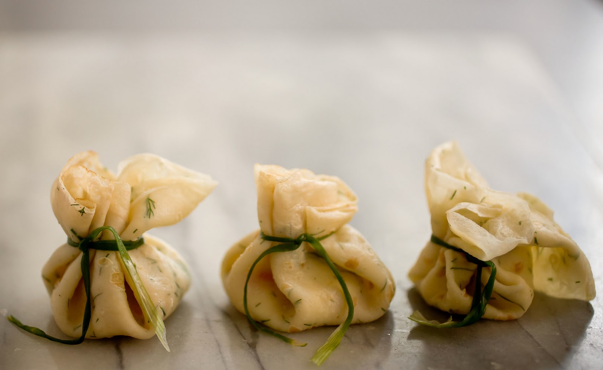

Beggar's purse is an American bite-sized appetizer originating from New York City. The appetizer consists of a small crêpe that's topped with a tsp of fine caviar and a dab of crème fraiche. The edges of the small crêpe are pulled up around the filling, then tied with strips of chive in order to resemble a purse.
Meal prep time : 1 hour 15 minutes
Servings : 8